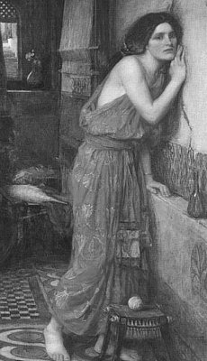

Doğu ülkelerinin en yakışıklı delikanlısı Piramos ile en güzel kızı Tisbe; tek duvarları birbirine bitişik iki ayrı evde oturuyorlardı. İkisinin de aynı kırlarda, güle oynaya birlikte geçti çocuklukları. Çok doğal olarak bu oyun arkadaşlığı, yetişkinlik çağlarında ateşli bir tutkuya dönüştü...
Ne var ki birbirine bitişik evlerde oturan ana-babaları; birbirleriyle anlaşamayan, komşu olsalar da kim bilir belki de kendilerinin bile unuttuğu bir neden yüzünden hasım kesilmiş iki aileydi. Bu yüzden baş başa verip anlaşmışçasına, çocuklarının birbirlerine duydukları büyük aşkı engellemek için, uzaktan bile olsa görüşmelerini yasakladılar! Ne var ki bu yasak, iki gencin arasındaki sevgiyi kısa sürede bir karasevdaya dönüştürdü... Tıpkı bir halk sözünün, "ayrılırsın aşk olur" dediği türden bir karasevdaydı bu...
Evlerinin ortak duvarında iki sevgili, karşılıklı bir delik açtılar ve bu deliğin üstüne, 'kem gözlerden bizi ırak tutsun' kabilinden, kraliçeleri Semiramis'in birer metal heykelciğini astılar. Artık bu gizli delik aracılığıyla iki âşık her gece, bazen şafak tanrıçasının yeri göğü boyamaya başladığı saate dek birbirleriyle fısıldaşıyor, birbirlerine en güzel umutlarla yüklü sözleri aktarıyorlardı. Gene anlatamadıkları duygularını, fısıltıya dönüşen öpücüklerle açıklamaya çalışıyorlardı... İşte böyle böyle fısıldaştıkları bir gece karanlığında, evlerine pek uzak olmayan kral Ninos'un mezarı yanındaki akdut ağacının altındaki pınarın yanında, gün batımına yakın bir saatte buluşmak üzere anlaştılar.
Tisbe ertesi gün, anlaştıkları saatte, ak ipekten bir tüle bürünmüş olarak akdut ağacının yanına geldi. Ama sevgilisi Piramos'u bulamadı... Heyecanla beklediği bir sürenin sonunda, birdenbire bir aslan kükremesi duydu. Aslan, her zaman olduğu gibi, dağda yakaladığı bir geyiği yemiş; kan bulaşıklı ağzıyla pınara su içmeye geliyordu. Aslanın kendisine saldırabileceği korkusuyla güzel Tisbe, ışıklı, sessiz ve beyaz bir hayalet gibi karanlık ormana doğru sıvışırken, beyaz ipek tülü de sırtından kayıp yere düştü. Hemen oralarda zar zor seçtiği karanlık bir kuytuya sindi sessizce. Susuzluğunu iyice gideren aslan da, ormandaki inine dönerken yolu üstündeki beyaz tülü gördü. İnsan kokusu sinmiş bu tülü kan bulaşıklı ağzıyla yokladı, kokladı; yer yer sivri dişlerini geçirdi. Sonra da kan kırmızısı beneklerle lekelenen tülü gene orada bırakıp inine doğru yollandı...

Tisbe
Buluşmasına biraz geç gelen Piramos, akdut ağacının altında sevgilisi Tisbe'yi göremeyince, içine garip bir kuşku ve tedirginlik saplanır gibi oldu... Sağa sola bakınaraktan sevgilisini aramaya başladı. Sonra ayakları dibinde bir beyazlık ilişti gözüne. Eline alıp yakından baktığı tül örtü nemliydi; üstelik yer yer dişlenmişti, kanlıydı!.. Korkunç bir gerçeğin zıpkınıyla vurulmuşa döndü!.. "Ey Piramos!" dedi kendi kendine. "Gördün mü, senin bütün varlığın demek olan sevgilini bir hayvan parçalayıp yemiş!.." Elindeki kanlı tülle, içi yana yana dut ağacının altına geldi. "Bu buluşmayı sen istedin," diye sürdürdü içsel konuşmasını. "Ama onun ölümüne neden oldun! Artık bundan böyle onunla öbür tarafta buluşacağız. Tanrıça Afrodit yardımcımız olsun!.." Bu sözlerden sonra hançerini çıkarıp böğrüne sapladı! Böğründen püsküren kan, beyaz dutları koyu kızıla boyadı hemen. Toprağa akan kanı da, topraktan süzülüp dut ağacının köklerine ulaştı. Oradan da ağacın bütün damarlarına yayıldı...
Bu arada Tisbe de saklandığı kuytuda, aslanın iyice uzaklaşıp gitmesini bekledi. Sonra da, kendisini sabırsızlıkla beklediğini düşündüğü sevgilisi Piramos'la buluşacakları akdut ağacının altına döndü. Ama orada, sevgilisi kanlar içinde yatmış, can çekişiyordu! Hemen üstüne atılıp ellerini, yüzünü yokladı tir tir titreyen elleriyle... "Sevgilim, ben Tisbe'yim! Duyuyor musun beni? diye feryada başladı. "N'olur ölme!.." Bütün yalvarıp yakınmaları boşunaydı... Çünkü olup bitenleri büyük bir acıyla sezip anladı. Sevgilisinin çığlıklarını duyan Piramos, zar zor gözlerini aralayabildi... Ve hiç de sözlere dökülemeyecek bir bakış attı sevgilisi Tisbe'ye. Bu bakışta bir elvedadan çok, sevgilisini gideceği yerlere çağıran yakıcı bir özlem vardı. Bunu bütün derinliğiyle duyumsayan Tisbe de, sevgilisinin yanında duran fildişi saplı kanlı hançeri aldı eline. Acı yazgısını bütün benliğiyle kabullenmişliğinin dinginliği içinde, son sözleri döküldü dudaklarından: "Artık ben de korkmuyorum! Bizi yalnız ölüm ayırabilirdi! Şimdi ben de aşkım uğruna ölümü seçerek senin yanına geliyorum. Tanrılar ve bizi ayıran gaddar ailelerimiz beni duysun. Bu dut ağacı bizim kanlarımızla sulanıp bir karaduta dönüşsün ve mezar taşımız olsun. Küllerimiz de gene bu ağacın dibine saçılsın..."
Bu serüvenden çok etkilenen orman perileri, Akdeniz ikliminin egemen olduğu aşka teşne bütün coğrafyalarda, bu karadut ağacının fidanlarını diktiler... Ve artık bu ağaçlar ayrılıkçılığın değil, sevgiyle bütünleşmenin simgesine dönüştüler...
Aradan geçen binyıllar içinde de, doğulu batılı birçok soylu ozan, bu aşk serüvenini şiirlere döktüler; heykeltıraşlar mermerlere işlediler...